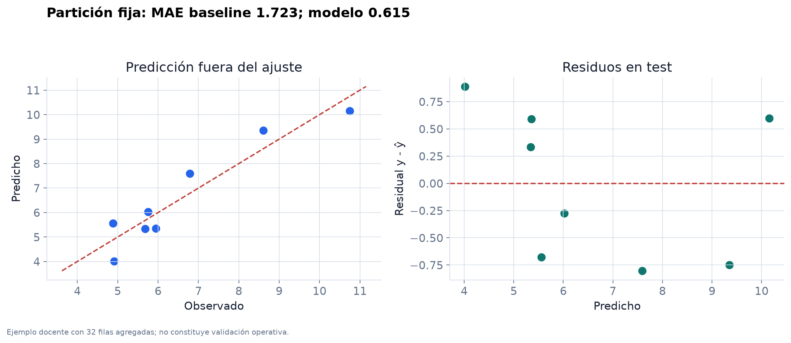
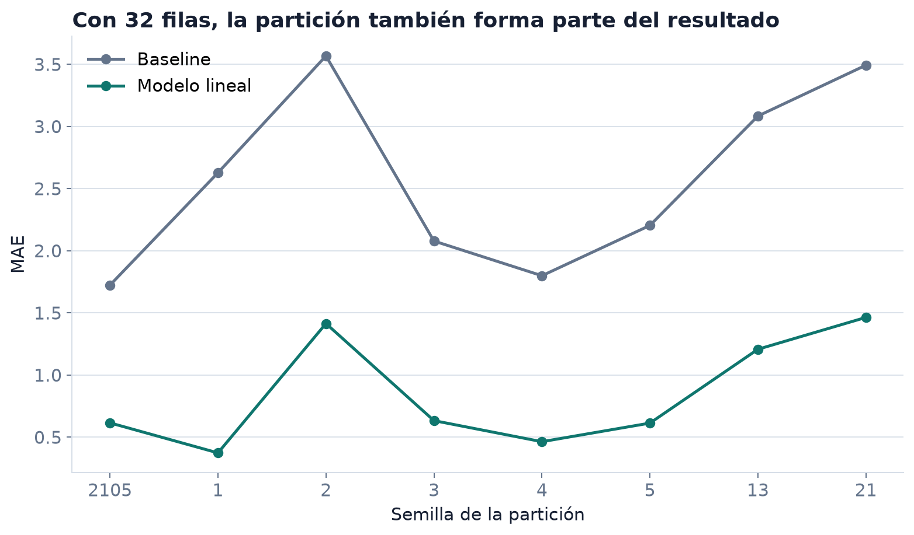

Semana 2 · Clase 2
Estimación estable, variación muestral y datos agregados
De la ecuación al cálculo
La clase anterior terminó en
\[ X^\top X\widehat\theta=X^\top y. \]
Hoy la pregunta es distinta:
¿Cómo calculamos \(\widehat\theta\) sin perder información numérica innecesariamente?
\(\widehat\theta\) es un estimador
Antes de observar la muestra,
\[ \widehat\theta(D_m)=\operatorname{lstsq}(X,Y) \]
es una función aleatoria de \(D_m\). Después de abrir el archivo obtenemos un vector numérico concreto.
Si \(Y=X\theta_P+\varepsilon\) y \(\mathbb E[\varepsilon\mid X]=0\), entonces, bajo rango completo,
\[ \mathbb E[\widehat\theta\mid X]=\theta_P. \]
Insesgamiento condicional no significa estabilidad en una muestra particular.
Cuatro expresiones que parecen equivalentes
inv(X.T @ X) @ X.T @ yforma \(X^\top X\) y construye una inversa completaevitar
solve(X.T @ X, X.T @ y)resuelve las ecuaciones normales, pero forma \(X^\top X\)limitado
lstsq(X, y)factoriza \(X\) directamente e informa rango y valores singularespreferido
LinearRegression().fit(X_raw, y)interfaz de biblioteca con intercepto y prediccióncontraste
En aritmética exacta y bajo rango completo pueden llevar al mismo parámetro. En un computador no hacen el mismo trabajo ni fallan de la misma manera.
Evitar la inversa explícita
obliga a:
- formar \(X^\top X\);
- construir una matriz inversa completa;
- multiplicarla por \(X^\top y\).
Para resolver un sistema lineal no necesitamos conocer la inversa entrada por entrada.
solve: útil, pero limitado
Es preferible a calcular la inversa y resulta claro en un ejemplo pequeño de rango completo.
Sin embargo, todavía forma \(X^\top X\) y exige que esa matriz sea cuadrada y no singular.
lstsq: la opción de esta semana
Resuelve directamente el problema de mínimos cuadrados mediante una factorización numérica. También informa rango y valores singulares.
Si no hay solución única
Cuando \(\operatorname{rank}(X)<p\), las ecuaciones normales pueden admitir varios parámetros que producen el mismo ajuste.
lstsq devuelve la solución de norma euclidiana mínima entre los minimizadores.
\[ \widehat\theta =\arg\min_{\theta}\left\{\lVert\theta\rVert_2: \theta\in\arg\min_b\lVert Xb-y\rVert_2\right\}. \]
Condicionamiento
El número de condición mide cuánto puede amplificarse una perturbación relativa al resolver un problema lineal.
\[ \kappa_2(X)=\frac{\sigma_{\max}(X)}{\sigma_{\min}(X)} \]
Un valor grande no demuestra que el resultado sea incorrecto, pero advierte sensibilidad a redondeo y pequeñas variaciones de los datos.
Formar \(X^\top X\) eleva el problema al cuadrado
Si \(X\) tiene rango columna completo,
\[ \kappa_2(X^\top X)=\kappa_2(X)^2. \]
Los valores singulares de \(X^\top X\) son los cuadrados de los valores singulares de \(X\). Esta es la razón central para preferir una factorización que opere sobre \(X\).
Columnas casi redundantes
\(x_1\): dirección observada en los datos
\(x_2=x_1+10^{-8}z\): casi la misma dirección
La predicción puede cambiar poco mientras los coeficientes cambian mucho y en sentidos opuestos.
Interpretar coeficientes exige revisar escala, rango y condicionamiento.
Primera pausa
Ordene estas acciones desde la más razonable hasta la menos razonable y justifique:
- calcular
inv(X.T @ X); - usar
solve(X.T @ X, X.T @ y); - usar
lstsq(X, y); - imprimir
cond(X.T @ X)pero nocond(X).
Tiempo: 6 minutos.
Las funciones del notebook
Cada función hace una operación pequeña. Así podemos probar formas, signos y valores sin depender de una celda extensa.
Pruebas de formas
Para \(m=4\) y una variable medida:
Estas pruebas detectan transposiciones y broadcasting accidental antes de mirar una métrica.
Comprobar el gradiente
Una diferencia central aproxima la componente \(j\):
\[ \frac{\partial J}{\partial\theta_j} \approx \frac{J(\theta+\varepsilon e_j)-J(\theta-\varepsilon e_j)}{2\varepsilon}. \]
En el notebook, el gradiente analítico y el numérico difieren en menos de \(10^{-7}\).
Abra el notebook
Ejecute semana02_live_coding.ipynb hasta la sección “Ecuaciones normales y cálculo robusto”.
No copie todavía las cifras del cierre. Compruebe qué salida produce cada función y por qué tiene esa forma.
Resultado del ejemplo controlado
Para
\[ x=(0,1,2,3)^\top,\qquad y=(1.1,2.9,5.2,6.8)^\top, \]
lstsq produce
El residual verifica la teoría
El residual de entrenamiento es
\[ r=(0.01,-0.13,0.23,-0.11)^\top. \]
Y el notebook obtiene
\[ X^\top r\approx(-4.4\times10^{-16},-4.4\times10^{-16})^\top. \]
No esperamos cero exacto en punto flotante; esperamos un valor compatible con el redondeo.
Comparar con la biblioteca
La diferencia máxima entre theta_sklearn y theta_lstsq es menor que \(10^{-12}\) en el ejemplo.
Un detalle sobre el intercepto
Ambos representan el mismo modelo con convenciones distintas de interfaz.
Cargar el caso Bogotá
| Filas | Columnas | Unidad de observación | Objetivo |
|---|---|---|---|
| 32 | 7 | subzona | precio_reportado |
La unidad del objetivo sigue sin estar documentada; el modelo no corrige esa ausencia.
Asociación descriptiva

Rosales, Centro y Ciudad Verde recuerdan que una tendencia global no describe por igual cada fila.
El baseline de regresión
Calculamos la media únicamente en entrenamiento:
El baseline no usa las cinco variables. Su función es preguntar si el modelo lineal extrae información predictiva adicional en la partición reservada.
Una partición fijada
Resultado fuera del ajuste
| Método | MAE | RMSE |
|---|---|---|
| media de entrenamiento | 1.723 | 1.954 |
| regresión lineal | 0.615 | 0.647 |
El modelo mejora ambas métricas en esta partición. Las unidades son las del campo objetivo, que la fuente no especifica.
Predicciones y residuales

Ejemplo docente con 32 filas agregadas. Residual definido como observado menos predicho.
Una sola partición es frágil

El modelo supera el baseline en las semillas mostradas, pero su MAE varía aproximadamente entre 0.4 y 1.5. Esa variación debe formar parte de la lectura.
El error de test también es aleatorio
Para pérdidas individuales \(L_i=(y_i-\widehat f(x_i))^2\),
\[ \widehat R_{test}=\frac1{m_{test}}\sum_iL_i, \qquad \widehat{\operatorname{SE}}(\widehat R_{test}) =\frac{s_L}{\sqrt{m_{test}}}. \]
La fórmula supone observaciones independientes y un procedimiento fijado. Con 32 subzonas y documentación incompleta, debe leerse como diagnóstico, no como garantía poblacional.
Segunda pausa
Redacte una conclusión de tres oraciones:
- comparación cuantitativa en la semilla 2105;
- advertencia sobre el tamaño y las particiones;
- advertencia sobre la documentación del objetivo.
No use las palabras “bueno”, “preciso” ni “generaliza”. Tiempo: 7 minutos.
Lo que este ejemplo sí enseña
- construir \(X\) y \(y\) sin perder la unidad de observación;
- ajustar con
lstsqoLinearRegression; - comparar contra la media de entrenamiento;
- calcular MAE y RMSE fuera del ajuste;
- inspeccionar residuales;
- medir variación entre particiones.
Lo que no autoriza
- valorar una vivienda individual;
- interpretar el objetivo en pesos o por metro cuadrado;
- recomendar una política urbana;
- atribuir efectos causales a estrato, área o número de baños;
- extrapolar a periodos o subzonas no representados.
Las limitaciones acompañan el resultado, no se relegan a una nota final.
Lista de implementación
Antes de aceptar una regresión lineal desde cero:
- verificar formas;
- fijar la convención del residual;
- comprobar gradiente con diferencias finitas;
- usar
lstsqen lugar de invertir; - revisar rango y
cond(X); - comparar con
LinearRegression; - superar un baseline en datos reservados.
Laboratorio 1
El laboratorio de regresión y descenso del gradiente evaluará:
- matriz de diseño y predicción;
- pérdida y gradiente;
- descenso del gradiente;
- comparación con
scikit-learn; - interpretación breve de convergencia y limitaciones.
La publicación es esta semana y la entrega se cierra al final de la Semana 3.
Cómo se calificará
El código y las salidas numéricas se verifican automáticamente. La parte manual se limita a una interpretación corta.
Para que una solución sea comprobable:
- no cambie nombres ni firmas solicitadas;
- no codifique respuestas esperadas;
- conserve semillas y formas;
- ejecute el notebook completo antes de entregar.
Cierre
La ecuación normal explica el óptimo; lstsq lo calcula sin formar una inversa; los residuales y el baseline dicen qué ocurrió en los datos reservados.
La próxima semana estudiaremos cómo llegar al mínimo mediante iteraciones y por qué el escalamiento cambia la trayectoria.